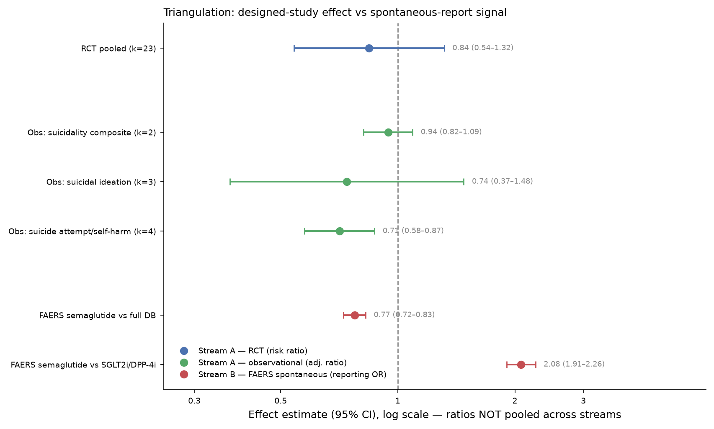
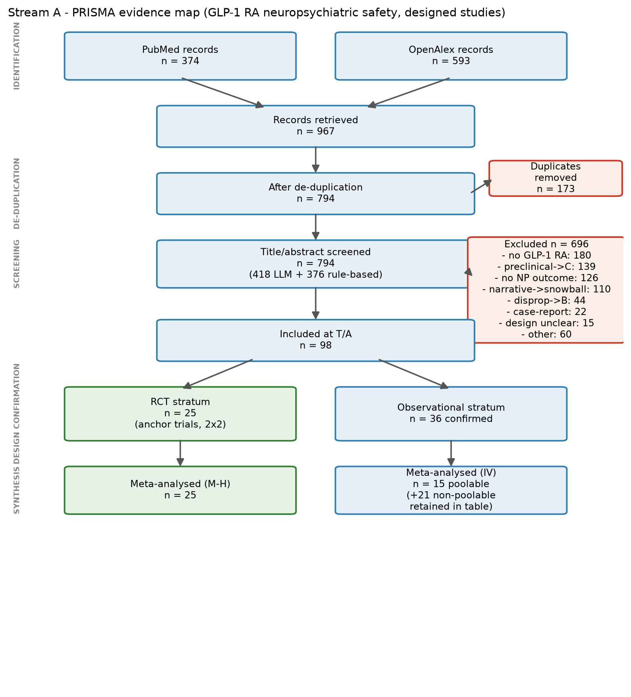
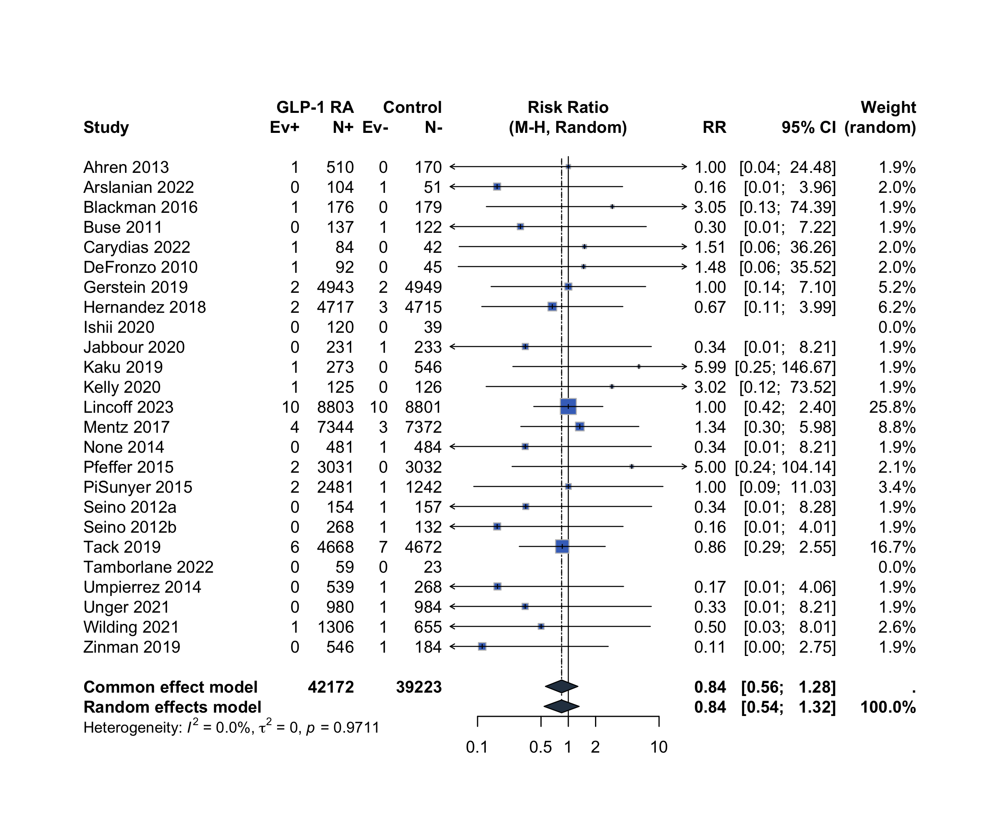
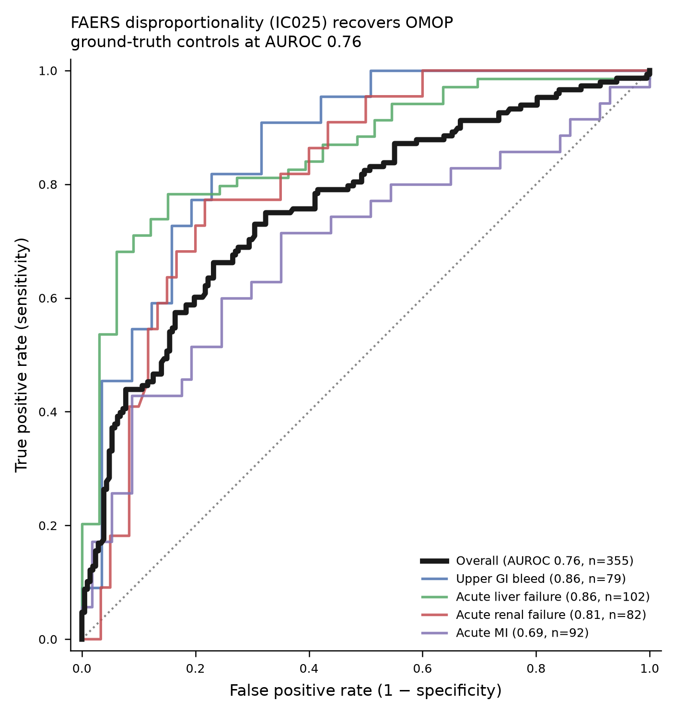
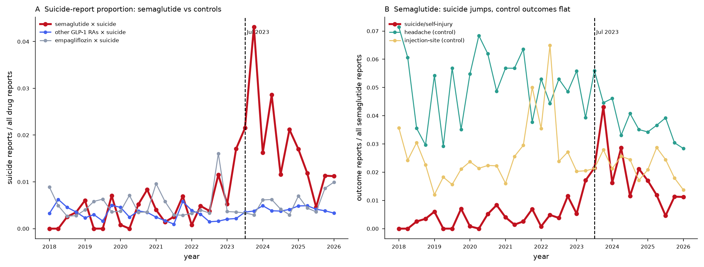
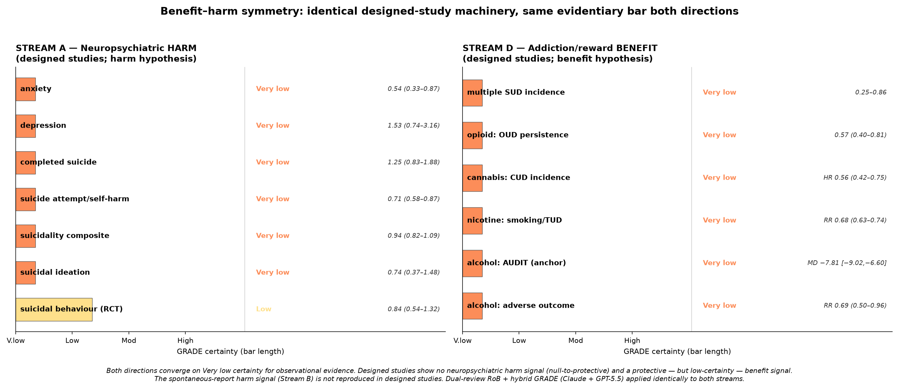
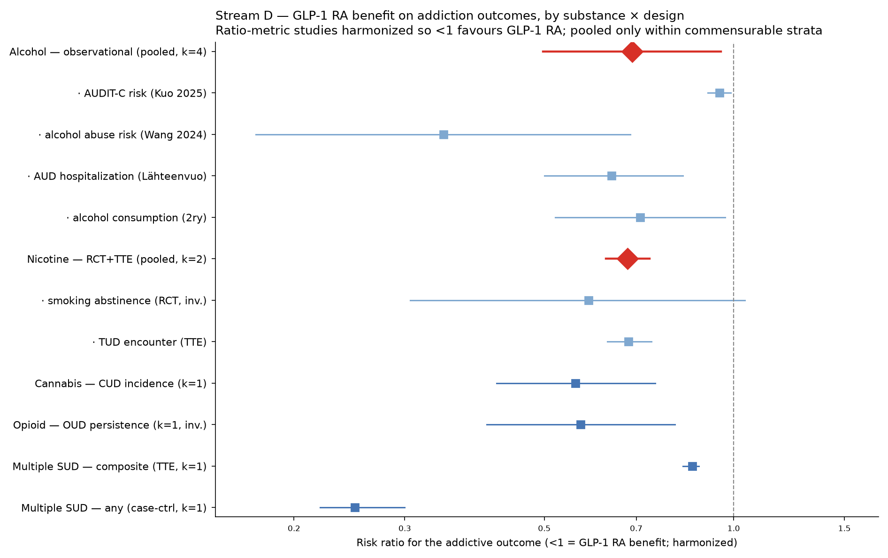

A meta-science investigation · the suicide-signal paradox
Tens of millions take GLP-1 drugs like Ozempic. In 2023 the FDA and EMA opened investigations because adverse-event databases were filling with reports of suicidal thoughts — yet the randomised trials show no such risk. So which do you believe? We rebuilt the whole evidence base to find out.
01 The contradiction
Spontaneous-report databases scream. Designed studies shrug. Both describe the same molecule and the same outcome — and careless pooling of the two produces a confidently wrong answer.
The question is not just “is it safe?” but “why do the evidence sources disagree, and which one should a regulator believe?” That is a meta-science problem — and exactly where this project lives.

02 The design
The mistake most reviews make is pooling everything into one average. We did the opposite: four evidence streams, each with its own PRISMA flow, study table, pooled estimate and GRADE certainty — compared at the end, never blended.
RCTs and observational cohorts, pooled properly and design-stratified. Do trials and cohorts show neuropsychiatric harm?
openFDA disproportionality. Is the spontaneous signal real — or an artifact of how it's measured? Never pooled with A.
A bidirectional evidence map of GLP-1 reward-circuit biology. Plausibility — not an effect size, and not a verdict.
Does the same pathway reduce craving and use? Quarantined from the safety question and treated as hypothesis-generating.
03 · Stream A Validating the pipeline
Before reading a new signal, we proved the machinery works: an auditable search, a published meta-analysis reproduced to the decimal, a disproportionality tool calibrated against a known-answer reference set, and small-study & confounding sensitivity tests.


Our pipeline recovers the published anchor — point estimate, CI, I², p-value and the 35-vs-36 event totals all coincide. A trust-check, not a coincidence.
The FAERS disproportionality tool scores AUROC 0.76 on the OMOP/Ryan reference set (355/399 estimable pairs) — a real, imperfect number, not a cherry-picked 0.99. A correctly implemented method is exactly why its later reading is worth trusting.

The RCT pool sits at RR 0.84 (0.54–1.32). But that upper bound does not exclude a clinically important harm margin of RR 1.20–1.25 (1.32 primary; up to 1.37 in the rare-event sensitivity variant), and with 71 events the stratum can only detect RR ≥ ~1.9 at 80% power. So the calibrated statement is “no detected increase,” never “harm excluded.”
We applied the same skepticism to the protective observational reads: E-values show the significant benefits are fragile — self-harm 0.71 collapses under an unmeasured confounder of just RR≈1.56.
Strata are never pooled together. Depression is too heterogeneous (I²≈100%) to summarise with one effect and is not shown as a point estimate.
04 · Stream B The novel result
Here is the heart of the project. For semaglutide × the suicide/self-injury term set, the FAERS reporting odds ratio doesn't converge — it swings across the no-signal line depending only on the comparison group. Scroll to watch it move.
Compared against metformin — the most-prescribed first-line diabetes drug — semaglutide looks protective. A regulator stopping here would close the case.
Swap the comparator to a sulfonylurea and it drifts upward — but still sits below 1. No signal.
Against every other drug in FAERS at once — still under 1. But the full database isn't an indication-matched control; it's just another reporting background.
Pool the non-GLP-1 diabetes drugs together and the estimate climbs toward the null — but hasn't crossed it.
Now it crosses. Against DPP-4 inhibitors the same drug, same outcome, same database reads as a signal.
The pre-registered anchor comparator lands at 2.08 — the number the headlines would run with.
Against SGLT2 inhibitors it climbs further from the line.
Compared within its own class, semaglutide produces the strongest signal of all — 3.29. Six-fold different from where we began.
04 · continued …and when
Hold the comparator fixed and split by calendar time. The signal is absent before July 2023 (ROR 0.85) and present after (2.98) — a jump that is specific to semaglutide, the drug that was in the news.
A difference-in-differences test against other GLP-1 RAs gives +0.0079 (z = 11.3, p < 0.001). Control outcomes (headache, injection-site reactions) and control drugs show no July-2023 discontinuity. That is the fingerprint of notoriety bias plus confounding by indication — not a drug effect.

05 · Stream D Exploratory
Now turn the machine on a hopeful question. In the same database, read against the same comparator: the harm signal dissolves under comparator/time sensitivity — while an addiction-reduction footprint survives across four substance classes. One database, symmetric treatment, opposite outcomes.

Design-stratified exploratory pools (harmonised so <1 favours GLP-1): alcohol RR 0.69, nicotine 0.68, AUDIT score −7.81 (anchor-reproduced from Eshraghi et al. 2025). All Very low certainty.
“0 harm” is not evidence of safety. It means no study reported a pro-addiction direction — confirmed by an independent blind pass across all 52 studies. The FAERS footprint is relabelled inverse disproportionality, not “benefit.” Vote-counting and “symmetry” are demoted to hypothesis-generating framing.

06 Why it generalises
The GLP-1 case is a proving ground. The same architecture — separated streams, calibrated tooling, and calibrated language — is a reusable way to do drug safety, monitoring, and discovery under contradiction.
Re-run the whole provenance chain on a schedule as trials report and databases refresh. Evidence syntheses that stay current instead of freezing on publication day.
A pharmacovigilance signal that reports its own comparator- and calendar-sensitivity — so regulators see an unstable alarm as unstable, before it drives a label change.
The exploratory stream that surfaced the addiction-benefit footprint is a template: mine the same evidence base for where a drug's mechanism might help, quarantined from the safety question.
07 The build track
The pieces that made this credible aren't bespoke to GLP-1. They travel with the project as versioned source and run on any systematic review.
dual-reviewer-robRuns the official signalling questions (RoB2: 22 Qs/5 domains; ROBINS-I: 34 Qs/7 domains) through two cross-model reviewers with a judge tier and a full quote-verified audit trail.
grade-hybridA deterministic engine for the arithmetic domains (RoB aggregation, I² inconsistency, imprecision) plus a dual-reviewer harness for the judgment calls. Consumes the RoB output.
faers_tool.pyAn openFDA client that standardises outcomes to the MedDRA suicide/self-injury term set and computes PRR / ROR / IC against full-database or custom active-comparator backgrounds.
Every tool, dataset manifest, and analysis in this project is released under the Apache License 2.0 — free to use, modify, and build on, with attribution. Reproduce every headline number with one command: ./reproduce.sh.